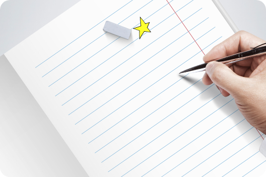
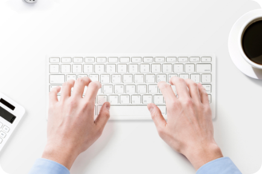

이곳은 트레이닝 하는 곳입니다.
받아쓰기 방식으로 트레이닝 하는 비대면 온라인 공간입니다.
왜 받아쓰기냐고요?
받아쓰기는 집중력 극대화의 방법이에요.
리스닝을 하다 보면 어느새 다른 생각을 하거든요.
어제 있었던 일, 내일 할 일, 좋은 일, 짜증나는 일.
받아쓰기는 초집중을 가능하게 합니다.
받아쓰기는 몸으로 공부하게 합니다.
리스닝은 머리로 공부하는 것이 아니라 몸으로 공부해야 한다
고들 말해요.
흔히들 “체득”이라고 표현이지요.
받아쓰게 되면 스펀지에 물이 스며들듯이 몸에 영어가 스며들
게 됩니다.

이 좋은 것을 왜 못했을까요?
사실 받아쓰기 예찬론자들은 많이 있었습니다.
그런데 지금까지 왜 제대로 못했을까요?
공부하기가 너무 불편했지요.
조금 들으면 휙~~~~ 지나가 버리니 어떻게 받아쓰나요?
한 손에 연필.
다른 한 손에 PLAY, REWIND, REPLAY
정말 불편하죠!
그래서!
EPL에서는 힘들게 개발했답니다.
IT시대잖아요.
종이에 받아쓰는게 아니라 웹상에서 받아쓸 수 있도록 개발했습니다.
정확하게 말하면 받아타이핑이에요.
종이도 볼펜도 필요없이 로그인만 하면 언제든지 공부할 수 있어요.
기존 영어받아적기
한 손에 연필.
다른 한 손에 PLAY 다시 REPLAY
불편함 up~
English Power Listening

귀는 듣고 손은 오로지 자판에.
초집중 가능해요!
오디오플레이어도 새로 특화시켜 개발했답니다.
보시면 알겠지만 마우스에 손도 안가게 만들었네요.
초집중해서 받아타이핑만 할 수 있도록 각종버튼을 특화시켰네요.
이러한 오디오 버튼은 어디서 본적이 없을 거에요.
이제 받아쓰기, IT 시대의 효과적인 재미있는 공부랍니다.